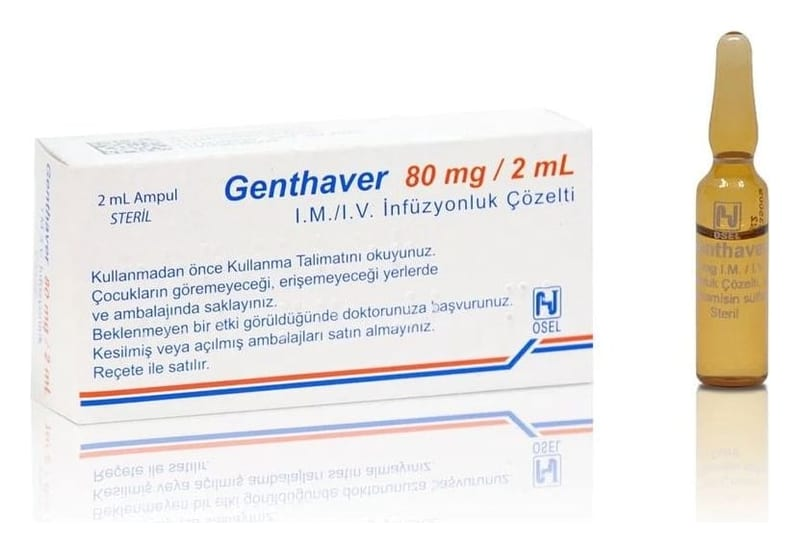

Genthaver 80 mg/2 ml IM/IV İnfüzyonluk Çözelti, 5 Ampul

Ne için kullanılır
KT · Bölüm 1• GENTHAVER, bakterilerin neden olduğu enfeksiyonlara karşı kullanılan aminoglikozit antibiyotikler adı verilen bir ilaç grubuna ait olan Gentamisin sülfat etkin maddesini içerir. • GENTHAVER, göğüs (akciğer ve plevra), idrar yolu, böbrek ve mesane, kan, ameliyat sonrası ve sinir sistemi, boğaz, kulak ve burun (kulak burun boğaz enfeksiyonları), gebelik ve doğum sırasında ve kadınların genital sistem enfeksiyonlarında (obstetrik-jinekolojik enfeksiyonlar) ve cilt ve yumuşak dokularda (şiddetli yanıklar ve deri nakli sonrası enfeksiyonlar) gibi birçok enfeksiyonu tedavi etmek için kullanılır, • GENTHAVER, enfeksiyon Gram negatif adı verilen bakterilerden kaynaklandığında ilk tercih edilen ilaç olarak düşünülebilir. Çok ciddi, yaşamı tehdit eden bir enfeksiyon devam ediyorsa, doktor bu ilacı başka bir antibiyotikle (beta-laktam antibiyotik, örneğin karbenisilin veya benzeri, Pseudomonas aeruginosa adı verilen bir bakterinin neden olduğu enfeksiyonlarda ve Grup D Streptokok adı verilen bakterilerin neden olduğu bir Bu ilacı kullanmaya başlamadan önce bu KULLANMA TALİMATINI dikkatlice okuyunuz, çünkü sizin için önemli bilgiler içermektedir.
• Bu kullanma talimatını saklayınız. Daha sonra tekrar okumaya ihtiyaç duyabilirsiniz. • Eğer ilave sorularınız olursa, lütfen doktorunuza veya eczacınıza danışınız. • Bu ilaç kişisel olarak sizin için reçete edilmiştir, başkalarına vermeyiniz. • Bu ilacın kullanımı sırasında, doktora veya hastaneye gittiğinizde doktorunuza bu ilacı kullandığınızı söyleyiniz. • Bu talimatta yazılanlara aynen uyunuz. İlaç hakkında size önerilen dozun dışında yüksek veya düşük doz kullanmayınız.
enfeksiyon olan kalp enfeksiyonunda-endokardit endikedir) birlikte reçete edebilir.